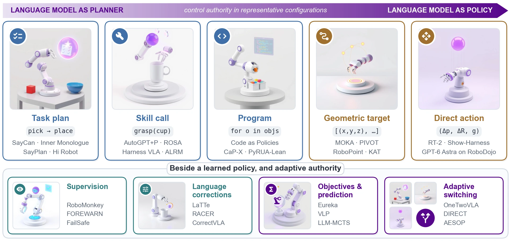
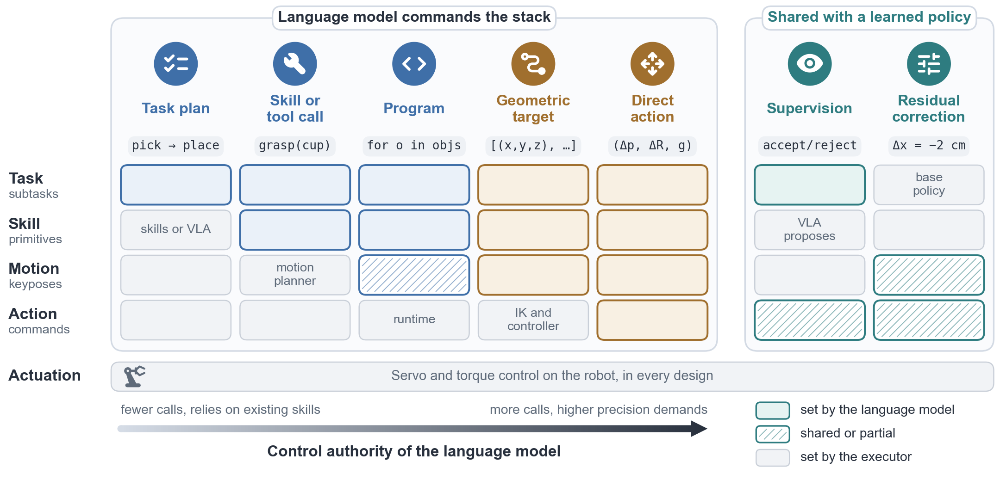
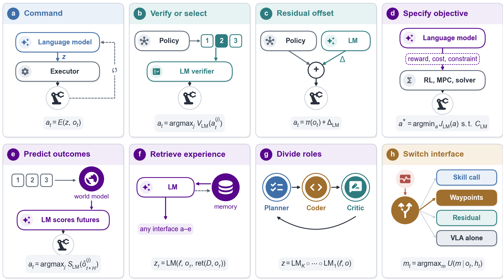
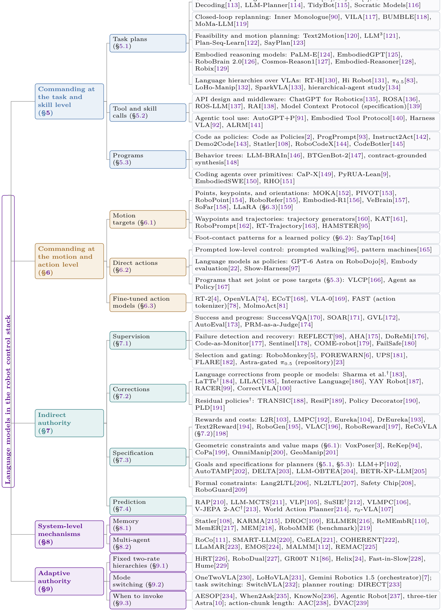
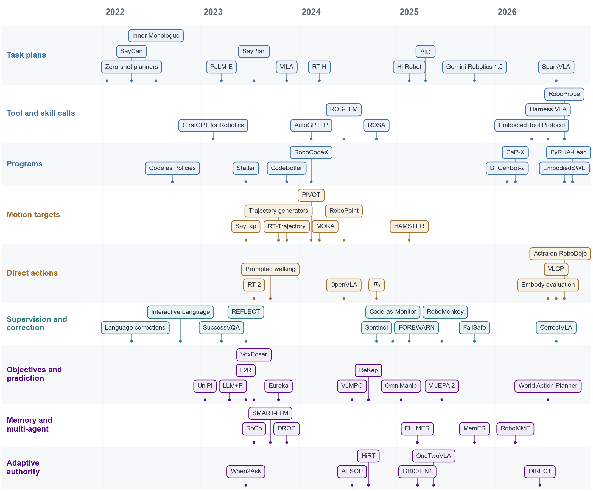
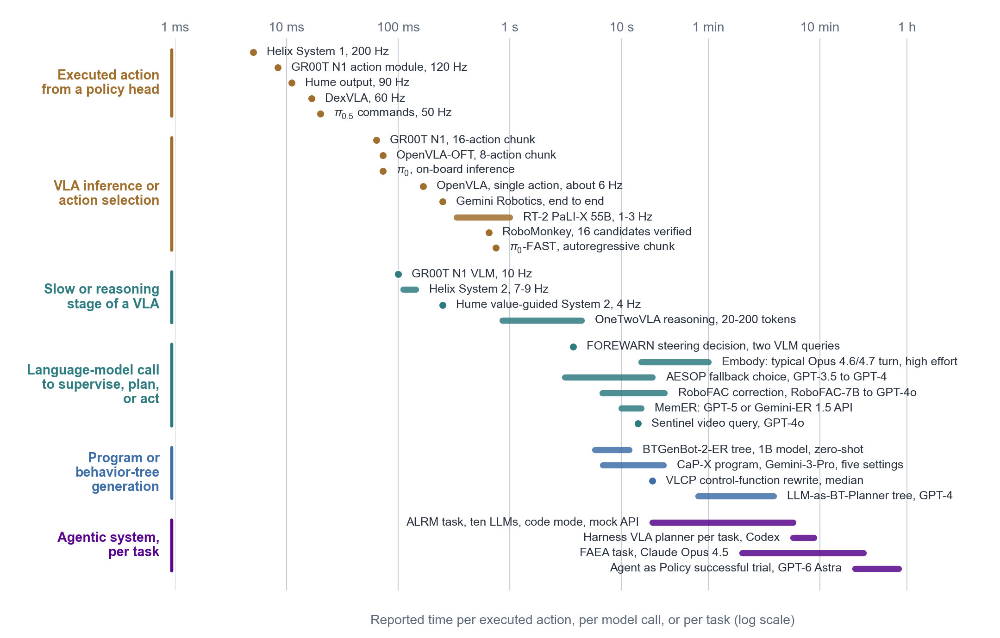
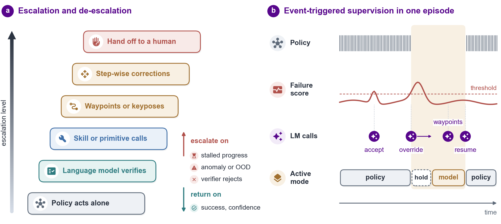
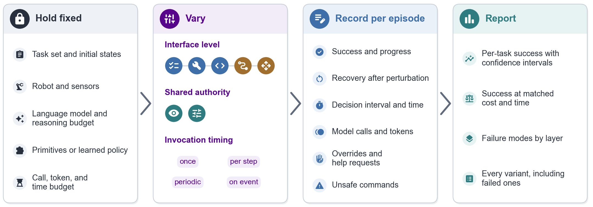

A Survey of Large Language Models for Robot Control

From planner to policy. Top: interfaces through which a language model commands the robot, ordered by its control authority in a representative configuration. Bottom: interfaces through which the model influences the motion indirectly, and systems that adapt the interface or the timing of model calls. Illustrations: FLUX.1-schnell.
Summary. Language models now control robots at every layer of the stack. The layer at which the model's output enters fixes how much of the motion it decides, how fast it must respond, and what each episode costs.
Large language models (LLMs) and vision–language models (VLMs) are used at almost every layer of the robot control stack. They plan subtasks, call skills, write control code, place waypoints, issue end-effector targets, supervise vision–language–action (VLA) policies, and write rewards for optimizers. These designs differ in how much of the motion the model decides and how often it is called, yet are mostly compared by task success alone. This survey organizes them by the action interface: the variable through which the model's output enters the control stack, with the executor that turns it into motor commands. Each interface is described by its abstraction level, representation, composition operator, and call timing. The model's control authority, the part of the motion it decides, is measured by the layer at which its output enters, the interval between its decisions, and, under shared control, how often it overrides a learned policy. The survey covers 221 systems from 2022 to October 2026, from SayCan and Code as Policies to general-purpose models acting as robot policies. With the model fixed, programs needed fewer calls than tool calls, while their effect on success depended on the model. Outputting precise geometry directly was a recurring weakness of general-purpose models, and supervisors called only on events or compiled into code reduced cost. Reported time scales range from 5 ms per action to tens of minutes per task, yet of 54 representative systems only half report a time measure and four a monetary cost. We formulate authority allocation as a constrained decision problem over success, latency, cost, and risk, and propose a protocol for matched interface comparisons.
Numbers reported in the reviewed papers. They come from different robots, simulators, and model versions and are not pooled.
An action interface is the pair of an interface variable that the language model emits and the executor that turns it into commands. Four descriptors place every system in a common space.

Where the output enters the stack. Columns show a representative configuration of each interface and rows are layers; filled cells are set by the language model, hatched cells are shared with a learned policy, and grey cells are set by the executor.

Composition patterns. How a language model's output reaches the actuators: command, verification, residual offset, objective specification, outcome prediction, retrieval, role division, and interface switching.
Systems grouped by composition operator and abstraction level, and their first public versions from 2022 to 2026.

Taxonomy. Systems are grouped by composition operator and abstraction level, and the last two branches by mechanism. Each entry refers to the configuration discussed in the cited section, and the groups overlap; direct actions include step-wise end-effector targets, which the catalog codes as Motion. A section number inside a leaf marks a system that the survey discusses in another section, and † marks reference points whose deciding component is neither a language model nor a VLA. Numbers in brackets refer to the paper's bibliography.

Timeline. Representative systems by interface family and mechanism at the month of their first public version. A box refers to the component or configuration discussed in the survey, and † marks reference points.

Reported time scales. Action periods, model-call latencies, and task durations from the cited sources (periods computed as 1/f where only a rate is reported), on a log scale; they are not directly comparable across hardware and models.
The appendix catalog of the survey with the four interface codes. Search by name or title, filter by any code, and click a column to sort. Entries marked † are reference points whose deciding component is neither a language model nor a VLA.
| System | Year | Family | Level/role | Repr. | Operator | Timing | Venue | Paper |
|---|
For 54 representative systems: whether the paper reports runs on physical robots and in simulation (qualitative runs count), a time quantity for the loop that contains the language model, model calls or tokens, and a monetary cost. Each mark was checked against the full text of the paper.
| System | Year | Language model | Level/role | Operator | Timing | Real robot | Simulation | Time | Calls/tokens | Price |
|---|

Adaptive authority. Modes ordered by escalation level, and an illustrative episode with event-triggered supervision: a false alarm, a recoverable hold while the model call is pending, and the return of control to the policy.

A protocol for comparing interfaces. Hold the task set, robot, model, and a shared set of base execution components fixed; vary the interface, its adapter, and the invocation policy; record success with time, cost, human involvement, and safety.
@misc{tan2026plannerpolicy,
title = {From Planner to Policy: A Survey of Large Language Models for Robot Control},
author = {Tan, Kaizhen},
year = {2026},
note = {Project page: https://tantansir.github.io/llm-for-robot-control/}
}